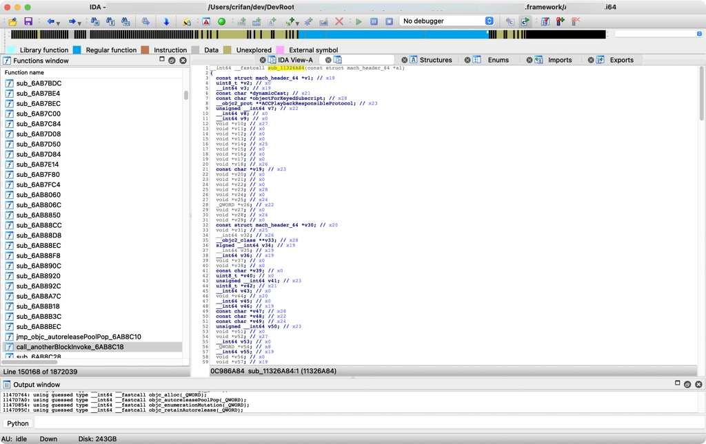
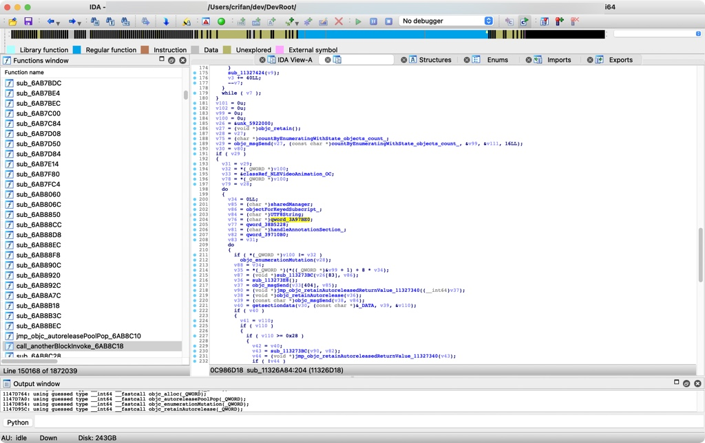

举例
- 概述
- 各种

sub_B7CBB90loc_B7CBBC4locret_B7CBC00
subsub_11326A84- 
unkunk_5922000unk_196E8C0
qwordqword_3A97BE0- 
locloc_C47002C
- 各种


详解：
sub函数
关于sub函数的一些细节说明：
sub_xxx：普通的函数（有代码处理逻辑的）- 比如去改名的话，可以改名叫做：
- sub_BinaryOffset
- sub_AddressInsideBinary
- 比如去改名的话，可以改名叫做：
nullsub_xxx：空函数（没有任何代码逻辑的）- IDA中关于
空函数的介绍Rename empty functions as nullsub_... This option allows IDA to rename empty functions containing only a "return" instruction as "nullsub_..." (... is replaced by a serial number: 0,1,2,3...)
- IDA中关于
此处给出实例：
举例：
【未解决】研究抖音越狱检测逻辑：_RxAnnotationInlineLoader的load
中的：
void __cdecl +[_RxAnnotationInlineLoader load](_RxAnnotationInlineLoader_meta *self, SEL a2)
{
。。。
j___dyld_register_func_for_add_image((void (__cdecl *)(const struct mach_header *, intptr_t))sub_11326A84);
j___dyld_register_func_for_remove_image((void (__cdecl *)(const struct mach_header *, intptr_t))nullsub_12445);

- _dyld_register_func_for_add_image传入的函数：sub_11326A84
- 就是个普通的，内部有代码逻辑的函数：
- 就是个普通的，内部有代码逻辑的函数：
- _dyld_register_func_for_remove_image传入的函数：nullsub_12445
- 从名字看，就知道：是个null的 空的 函数
- 进入看，果然是空的，啥也没有

qword
对于qword：
- 常常是：常量字符串
偶尔是：其他类型
- 比如字典的指针等等
核心逻辑是：
- qword_xxx的xxx是二进制内偏移量 + 二进制的ALSR = 实际（字符串的）地址
- 去查看： 实际（字符串的）地址 = （即可查看到）保存了对应的字符串
此处举例说明：
IDA伪代码：

v4 = (const char *)qword_38A1598;
计算qword_38A1598的实际的值是什么
而通过此处的类型强制转换(const char *)可以看出是个字符串，所以此处就是去看看：到底字符串的值是什么
先查看当前二进制的ALSR基地址：
(lldb) image list -o -f | grep AwemeCore
[ 0] 0x0000000100a98000 /Users/crifan/Library/Developer/Xcode/DerivedData/Aweme-fswcidjoxbkibsdwekuzlsfcdqls/Build/Products/Debug-iphoneos/Aweme.app/Frameworks/AwemeCore.framework/AwemeCore
再继续计算此处的字符串的值：
(lldb) p/x 0x0000000100a98000 + 0x38A1598
(long) $7 = 0x0000000104339598
(lldb) x/1gx 0x0000000104339598
0x104339598: 0x000000010185c42e
(lldb) po (char*)0x000000010185c42e
"dynamicCast:"
unk
unk本身是IDA伪代码解析后，不知道变量具体的值什么类型，所以无法给出更加精准的变量命令。
此处，通过具体例子来介绍，如何调试和计算真实的值
unk_3F852B3是字符串
比如：
__int64 __fastcall sub_11326A84(const struct mach_header_64 *a1)
{
。。。
v2 = getsectiondata(v1, (const char *)&unk_3F852B3, (const char *)&unk_47DC9B8, &size);
if ( v2 && size && size >= 0x28 )
{
。。。
v4 = (const char *)qword_38A1598;
其中的：unk_3F852B3
由名字可知，该变量的地址是：3F852B3
IDA中通过地址可以查看到内容=定义是：
_D_cstring:0000000003F852B3 unk_3F852B3 % 1 ; DATA XREF: sub_5B77470+3C↓o
是看不出具体类型和具体的值的。
不过，此处动态调试期间，可以根据地址算出来：
unk_RelativeAddress -> ALSR基地址 + RelativeAddress = 当前内存地址
先去看：ALSR基地址 = 二进制加载的首地址 = 此处是抖音的AwemeCore加载的首地址 = 如前面已计算出是0x0000000100a98000
计算过程：
(lldb) p/x 0x0000000100a98000 + 0x3F852B3
(long) $0 = 0x0000000104a1d2b3
(lldb) po (char*)0x0000000104a1d2b3
"__DATA"
(lldb) x/1gx 0x0000000104a1d2b3
0x104a1d2b3: 0x5200415441445f5f
(lldb) po (char*)0x5200415441445f5f
""
所以才看出此时：
unk_3F852B3 == "__DATA"
所以再去优化IDA中的代码：把unk_3F852B3改名为__DATA

以及，IDA伪代码中，也去刷新即可看到新的变量名：
v2 = getsectiondata(v1, (const char *)&_DATA, (const char *)&RxAnnotation, &size);
if ( v2 && size && size >= 0x28 )
-> 从而使得代码逻辑稍微更加清晰了一点。
-> 类似的，别的unk的地址，也可以计算出调试时的内存地址，从而查看到是什么值
unk_3F852BA(lldb) p/x 0x0000000100a98000 + 0x3F852BA (long) $3 = 0x0000000104a1d2ba (lldb) po (char*)0x0000000104a1d2ba "RewardedADJSB"unk_47DC9B8(lldb) p/x 0x0000000100a98000 + 0x47DC9B8 (long) $5 = 0x00000001052749b8 (lldb) po (char*)0x00000001052749b8 "RxAnnotation"
unk_1B52440是字符串
再给出一个例子，介绍如何计算unk的值：
IDA伪代码：

v60 = objc_msgSend(
&OBJC_CLASS___NSString,
stringWithFormat,
&unk_1B52440,
**(_QWORD **)v42,
**((_QWORD **)v42 + 1),
**((_QWORD **)v42 + 2),
v72);
IDA中定义是：
_D_cfstring:0000000001B52440 unk_1B52440 % 1 ; DATA XREF: sub_11326A84+4B0↓o

注意到其中的_D_cfstring =constant string ?
去计算值：
(lldb) p/x 0x0000000103008000 + 0x1B52440
(long) $16 = 0x0000000104b5a440
(lldb) po (char*)0x0000000104b5a440
RxAnnotation:%@-%@-%@

即：
unk_1B52440 = constant string常量字符串：RxAnnotation:%@-%@-%@
然后去优化IDA伪代码，把unk_1B52440改为更容易读懂的名字，比如RxAnnotation_percentAt_percentAt_percentAt。
另外类似的例子：
unk_1942B60
IDA伪代码：
jmp_objc_msgSend_D523EEC(HMDNetworkReqModelObj, (const char *)setMethod_, &unk_1942B60);
IDA中定义：
_D_cfstring:0000000001942B60 unk_1942B60 % 1 ; DATA XREF: sub_59FA0FC+14↓o
_D_cfstring:0000000001942B60 ; sub_59FA0FC+18↓o ...
计算逻辑：
(lldb) p/x 0x0000000105140000 + 0x1942B60
(long) $22 = 0x0000000106a82b60
(lldb) po (char*)0x0000000106a82b60
POST
(lldb) po [0x0000000106a82b60 class]
__NSCFConstantString
-> unk_1942B60是__NSCFConstantString字符串常量："POST"